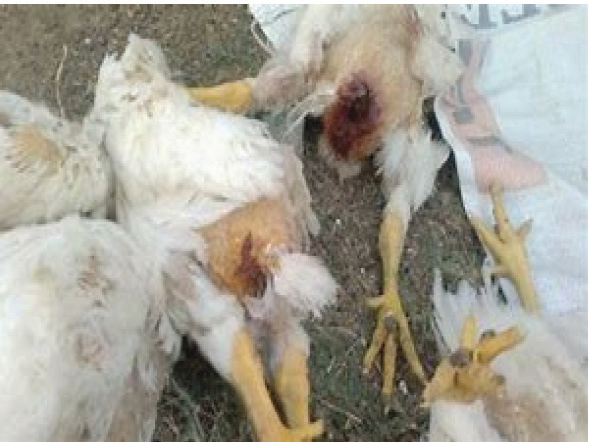
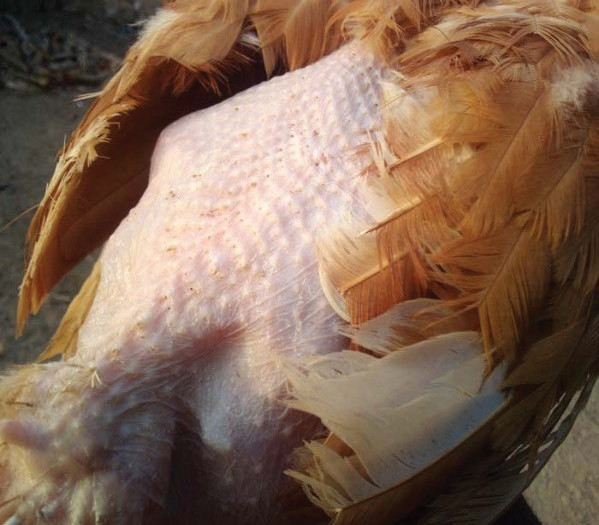

(b) If you have used any drugs on your flock, make sure to follow the drug’s withdrawal period. This is important to prevent the sale of products that contain residues of drugs. The withdrawal period is the time after which the drug’s effects on the animals will no longer be detectable in their products. It is important to follow this period to ensure the quality and safety of the products you sell to customers.
Vices in chickens
Chickens can also have bad habits (vices). These are usually caused by poor management. Some common bad habits in chickens include cannibalism, feather pecking and egg eating.
Cannibalism and feather pecking:
These are usually caused by stress. Birds can peck each other, which can lead to death. This can happen when birds are not well managed or when they are in conditions that are not part of their normal routine. Figures 10.15 and 10.16 show cannibalism and feather pecking, respectively.


To manage cannibalism and feather pecking in chickens, you can:
- (a) Give birds enough space based on their age, type, and care system.
- (b) Reduce light brightness by using dim lights or placing the building so that light doesn’t hit the long side.
- (c) Provide enough feeders and drinkers according to the recommended ratio to the floor space and birds.
- (d) Give birds the right amount of balanced feed according to their needs.
- (e) Use measures to control external parasites such as flies, lice, and mice.
- (f) Ventilate the houses to bring in fresh air and remove bad smells.
- (g) Keep birds busy by hanging up fodders such as vegetables or edible tree leaves.
- (h) Isolate birds that have been pecked to prevent further pecking or death then treat the pecked birds.